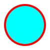

<!--
    SVG <svg>

    É uma marcação, estilo html, mas não é para textos e sim para imagens.
    Possuimos elementos para gerar formas

    Para entender melhor
    - Imagem rasterizada x Imagem vetorizada

    Benefícios
    - Mias leve
    - Mais detalhada
    - Maior acessibilidade e SEO
    - Pode ser editada via CSS ou atributos

    Desvantagens
    - Pode ser mais complicado de trabalhar
    - Quanto mais complexa a imagem, mais trabalho para o navegador
    - Navegadores mais antigos não possuem suporte a esta tag

    Para fotografias, ainda prefira usar imagens rasterizadas.
-->

<svg width="100" height="100">
    <circle cx="50" cy="50" r="40" stroke="red" stroke-width="4" fill="white"/>
</svg>
<br>
<svg width="100" height="100">
    <rect width="100%" height="100%" fill="purple"></rect>
</svg>
<br>
